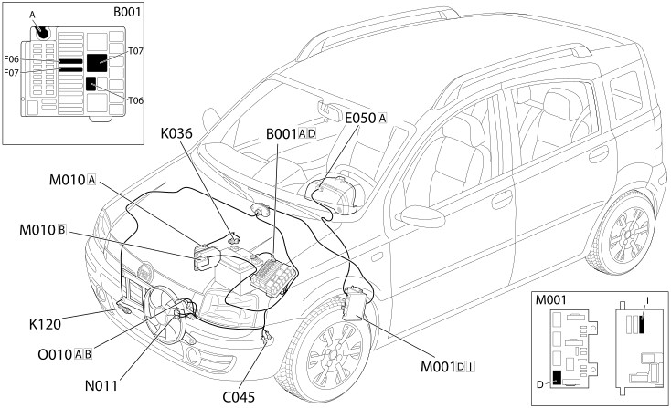

E5020 ENGINE COOLING - Location of components
- Path
- Electrical equipment > 1 ELECTRICAL FUNCTIONS > E50 ENGINE CONTROL AND MANAGEMENT SYSTEMS > E5020 ENGINE COOLING > E5020 ENGINE COOLING - Location of components
- Kind
- topic
- Applies to
- engines: 1.2 8v; all production periods; only with equipment: Air Conditioner and Smart gearbox and ESP
- Interactive page
- https://sloeber94.github.io/elrnDB-fPnd/en/#/2751571
Applies to: engines: 1.2 8v; all production periods; only with equipment: Air Conditioner and Smart gearbox and ESP
Location of components

COMPONENTS
Component code | Name | Assembly reference |
|---|---|---|
Engine compartment junction unit | ||
engine compartment junction unit | ||
Fan earth | - | |
Front / engine coupling | - | |
Front/engine connection | - | |
Front radiator coupling | - | |
front / radiator coupling | - | |
Instrument panel | ||
Linear sensor (for climate control) | - | |
Linear sensor (for climate control) | ||
Linear sensor for climate control | - | |
Linear sensor for climate control | ||
Engine coolant temperature sensor/sender unit | ||
Engine coolant temperature sensorsender unit | - | |
Engine coolant temperature sensorsender unit | ||
Engine coolant temperature sensorsender unit | ||
Body computer | ||
Engine management control unit | - | |
Engine management control unit | ||
Engine management control unit | ||
Engine electric fan motor | - | |
Engine electric fan motor | ||
Engine electric fan motor | ||
Engine electric fan motor | ||
Engine fan adjustment resistor | - |
Topics linked from this page (19)
- 1056B multi-point injection system (mpi)
- 1060G pressure pump electric control
- 1088B ENGINE COOLING RADIATOR
- 1088E coolant temperature control devices
- 5040B system safety check devices
- 5505A multi-function components
- 5505C vehicle compartment wiring
- 5560B analogue control panel
- E50 ENGINE CONTROL AND MANAGEMENT SYSTEMS
- B001 JUNCTION UNIT
- C045 FAN EARTH
- D004 FRONT/ENGINE COUPLING
- D009 FRONT/RADIATOR COUPLING
- K036 ENGINE COOLANT TEMPERATURE SENSOR/SENDER UNIT
- K120 LINEAR SENSOR FOR FANS
- M001 BODY COMPUTER
- M010 ENGINE MANAGEMENT ECU
- N011 FAN MOTOR
- O010 ENGINE FAN ADJUSTMENT RESISTANCE - 1